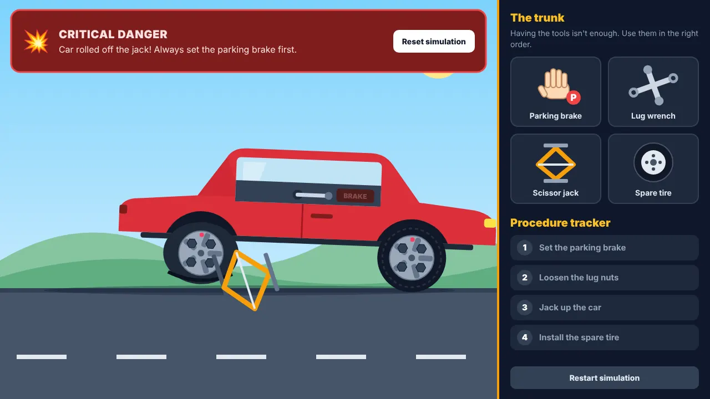
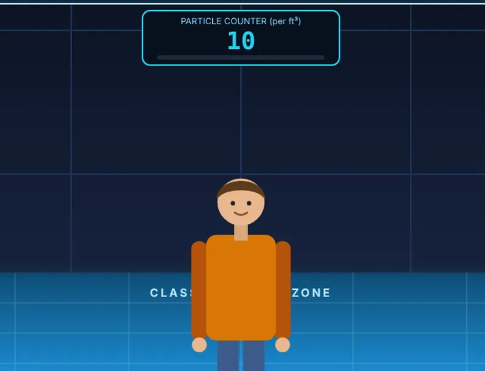
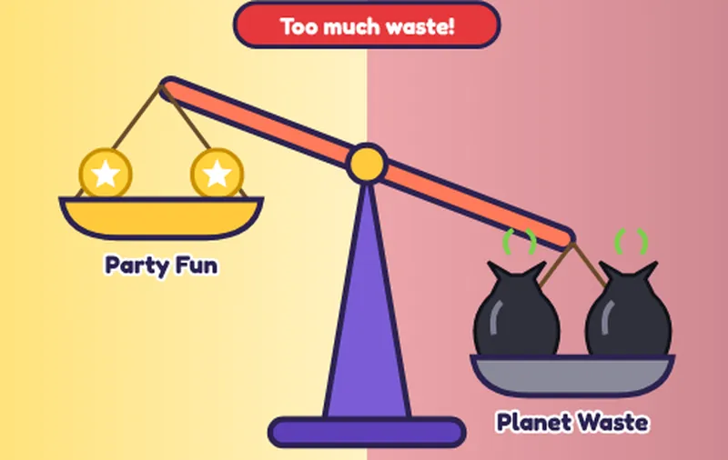
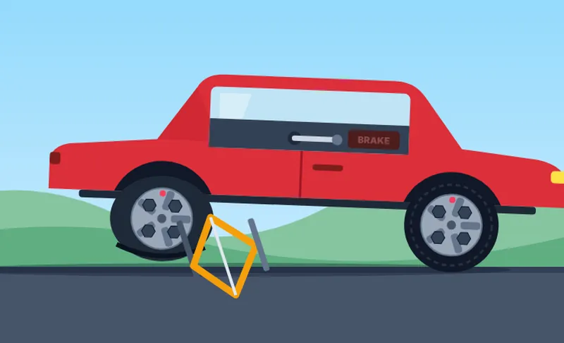
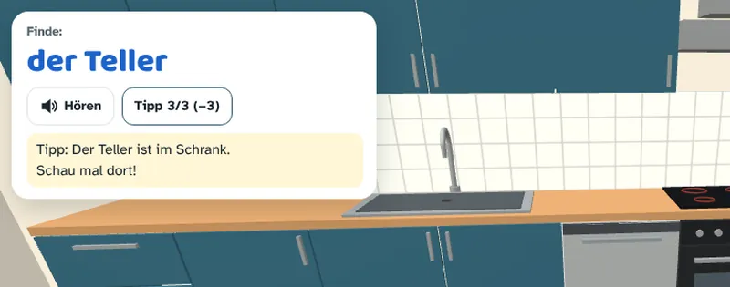

Training that plays like a game and works like the job.
I design visual learning simulations. People make real decisions, get it wrong safely, and see the consequences instead of reading about them.
Five simulations. All playable.
Hover over any of them to see what happens when you get it wrong.

 Get it wrong You hear what you clicked, with its article
Get it wrong You hear what you clicked, with its article
Wo ist der Löffel?
Learn 58 German words by finding them in a kitchen you can walk around.
Play it

Get it wrong Skip the brake and the car rolls off the jackChanging a flat tire
Four tools, one car. The order is everything.
Play it
 Get it wrong Dust falls on the clean suit: 10,000 particles
Get it wrong Dust falls on the clean suit: 10,000 particles
Cleanroom gowning
Gown a technician while a particle counter watches.
Play itCircular economy series

 Get it wrong Too slow and the material burns
Get it wrong Too slow and the material burns
Close the loop
Rescue waste from the belt before it reaches the fire.
Play it
 Get it wrong The "compostable" cups are a trap
Get it wrong The "compostable" cups are a trap
Eco-Party Planner
Balance party fun against planet waste.
Play itI make learning visible.
Most training explains. I'd rather show. Here's the same cleanroom rule, both ways.
Put on the hairnet first, then the hood so that it covers your head and neck. Next, step into the coverall. Put on the shoe covers before you cross the clean line. Finally, put on the gloves and pull them over your sleeves so they seal.
- Consequences you can see A scale tips. A car rolls. A counter jumps.
- Colour that carries meaning Der is blue, die is red, das is green. Every time.
- Feedback inside the scene The world reacts first. The explanation follows.
How I design a simulation
Five steps, shown with moments from the projects above.
-

Find the moment that matters
Not the topic. The decision where people go wrong.
-

Make the consequence visible
A mechanic that shows the effect, the way the real world would.
-

Design the mistakes
Every wrong move plays out, and comes with a reason.
-
Build it to run anywhere
Light HTML5 for the browser, Articulate Storyline or your LMS.
-

Play-test and tune
Hints, difficulty and feedback, adjusted until it feels fair.
What I can build for you
Start with the problem. Most projects combine two of these.
Learning simulations
For procedures, safety and judgment calls where mistakes on the job are costly.
Games for schools
For topics like sustainability or languages, with notes for teachers.
Interactions for Storyline
A web object for the interaction your course can't do on its own.
Course rescue
A course people click through gets rebuilt around practice.
About
People learn the most at the moment they get something wrong, as long as it's safe and they can see why. That's the moment I design for.
I'm Razin Abdullah, a learning experience designer with an M.Ed. from the Technical University of Munich. For more than four years I've designed and evaluated learning for international teams and learners, from step-by-step procedures in high-stakes workplaces to games for classrooms and language beginners.
- M.Ed.Technical University of Munich
- 4+ yearsLearning design and evaluation
- Builds withHTML5, JavaScript, three.js, Articulate Storyline
Got a training problem? Let's make it playable.
Tell me who it's for and where people go wrong. I'll reply with how I'd turn it into a simulation.